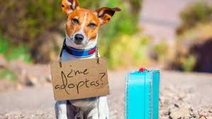
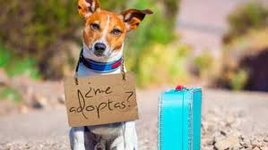

Somos un Refugio canino donde brindamos un ambiente seguro donde los animales pueden recuperarse física y emocionalmente, mientras esperan ser adoptados por nuevas familias responsables.


 

Más animales esperando ser adoptados.